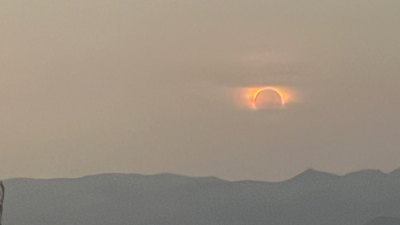
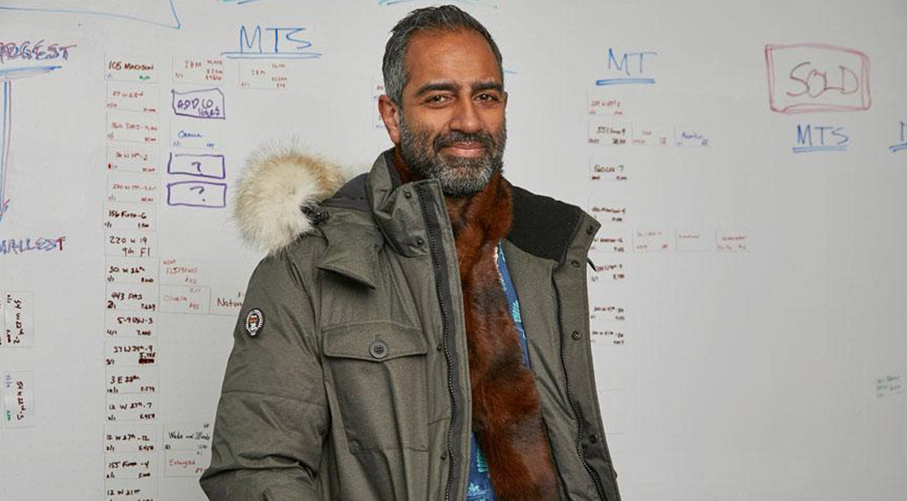

Health Provider AI Workforce Sensitivity Model
Explore how AI-addressable tasks could reshape capacity across a 100,000-person health provider—and test the assumptions yourself.
FOUNDER · INVESTOR · TEACHER · WRITER
I build companies, back founders, teach venture, and write about technology, biology, cities, and making new things people like.
Stanford PhD. Columbia professor.
This is a home for the blog, writing, ventures, teaching, conversations, and longer work.
Essays, notes, research — updated a few times a month.
Essays, notes, and research on building, technology, policy, design, and public life.
Companies and funds I have founded, backed, or helped shape.
Courses and venture programs for people trying to build real things.
Interviews and discussions with founders, executives, and academics.
Longer-form work, guides, and archives worth revisiting.
A quick snapshot of what I am working on, teaching, and thinking about now.
Explore how AI-addressable tasks could reshape capacity across a 100,000-person health provider—and test the assumptions yourself.
Short notes on companies, ideas, and the occasional thing worth paying attention to.
On building teams that ship thoughtful work with unusual speed and consistency.
A Columbia course on building ventures with ambition, discipline, and actual contact with reality.
Software-driven science investing focused on extending the longevity of people and planet.
Notes on longevity, health systems, venture, and whatever else won’t leave me alone. Posting since 1998.
Go to the blog
A sensitivity model for AI in the health workforce—and the uncomfortable thing it says.
Read post
GLP-1s aren’t the iPhone of metabolic health. They’re the modem.
Read post
High-normal for a man, adjacent to breeding bulls—and why baseline testing matters.
Read post
Who are my deepest relationships, measured by the long arc of contact rather than memory?
Read post
A diligence deep-dive into inflated open-source traction.
Read postA selection of current and past ventures, along with a few of the companies and programs I've helped support.
I've advised startups including Plethora, Fon, Payfone, Work Market, and Ouya, and mentored through Techstars, NYC Seed, Jazz Human Performance Venture Partners, and Columbia's venture programs. Through Sarva, Sarva, Sarva & Sarva, I've also backed a wide range of early-stage companies.
Writing has been a parallel practice throughout: essays, notes, research, guides, and the occasional archival rabbit hole.
My writing has appeared in Fortune, Salon, BusinessWeek, Strategy & Business, Huffington Post, Alley Insider, and elsewhere.
I teach venture as a practical discipline: not just theory, but the work of getting something real into the world.
Course site — a Columbia course where undergraduates develop ventures aimed at real problems, with an emphasis on ambition, rigor, and execution.
An advanced, small-team venture studio where students pressure-test ideas, work with experienced operators, and launch pilots before graduating.
I've also served as a mentor and advisor across accelerators, venture programs, and founder communities in New York and beyond.
I like conversations with people who have actually built, discovered, governed, or thought through something difficult.
Listen to the series — conversations with founders, CEOs, and academics about business, cities, science, and how ideas travel into the world.
Policy work that has included testimony before the FCC and the U.S. Senate on wireless spectrum and open access, back when telecom policy still managed to be both important and weirdly theatrical.
Watch the FCC spectrum testimony Wireless Spectrum Auction and Small Business hearing, streamed by C-SPAN on YouTube.I am a founder of the Founders' Roundtable in New York, a long-running gathering of venture-backed founders that has met monthly since 2006.
Longer projects, selected essays, and research that sit a little outside the normal tempo of startup life.
My Stanford dissertation examines modularity in cognitive science: a question about mind, structure, and how complex systems hang together.
Projects, events, outside links, interviews, and profiles that sit a little outside the standard biography.

The moon caught the sun two and a half degrees above the horizon, so totality arrived folded into the sunset. A film, a time-lapse that runs on into the dark, 53 frames with their exposure data, and a poster.
See the eclipseSmall tools from my own Mac: preserve the record, clean the cloud attic, keep repos moving, stop runaway daemons, and ship while I sleep. Field notes turned into apps.
Browse scriptsA recap of the day: photos, speeches, documents, source packet, and supporting mythology.
Open guideFT's "grave dancer" profile on threading resilient growth in flexible offices.
Open FT articleLive encyclopedic dossier on ventures, policy work, and academic projects.
Open WikipediaDeep-dive interview on contrarian strategy, Knotel's buildout, and cultural roots.
Open interview
On building markets through experimentation, learning loops, and customer empathy.
Open articleFor event organizers and press: copy whichever length fits, and grab the high-resolution headshot.
Amol Sarva is founder and managing partner of LifeX Ventures, a venture firm investing in software-driven science and longevity. He co-founded Knotel, Peek and Halo Neuroscience, was on the founding team of Virgin Mobile USA, teaches venture at Columbia, and holds a PhD in cognitive science from Stanford.
Amol Sarva is an entrepreneur, investor, and teacher. He is founder and managing partner of LifeX Ventures, a venture firm focused on software-driven science and longevity, and created Popular Change, a company builder. He co-founded Knotel, which grew into one of the world’s largest flexible-office businesses before its acquisition by Newmark in 2021, and earlier founded Peek, helped develop Halo Neuroscience, and was on the founding team of Virgin Mobile USA. He has backed roughly fifty early-stage companies, teaches venture at Columbia, and co-leads Health 2035, a research initiative with the McKinsey Health Institute and Columbia University. He holds a PhD in cognitive science from Stanford and a BA from Columbia.
Amol Sarva is an entrepreneur, investor, and teacher.
He co-founded LifeX Ventures in 2022, a venture firm focused on software-driven science and longevity. He also created Popular Change, a company builder behind ventures including Aikito, CornerUP, Ratio21, and Dinara.
He co-founded Knotel in 2016 and helped build it into one of the world's largest flexible office businesses before its acquisition by Newmark in 2021. Earlier, he helped develop Halo Neuroscience, a neurostimulation company later acquired by Flow Neuroscience, and founded Knotable, a collaborative notes platform backed by Bloomberg Beta and 500 Startups.
His earlier work includes founding Peek, an award-winning mobile device company; serving on the founding team of Virgin Mobile USA; and working on wireless and telecom ventures at a moment when mobile still felt like the frontier. He has also advised startups across manufacturing, payments, labor, gaming, and communications.
Beyond operating, he has backed startups through his family angel fund and has been involved with roughly fifty early-stage companies. He teaches at Columbia, where he works with students on ventures, ideas, and the messy process of building something real.
He holds a PhD from Stanford and a BA from Columbia. Outside the usual categories, he has built a noted residential project in Long Island City, run a neighborhood blog, recorded long-form conversations with founders and thinkers, and published writing across technology, business, and culture.